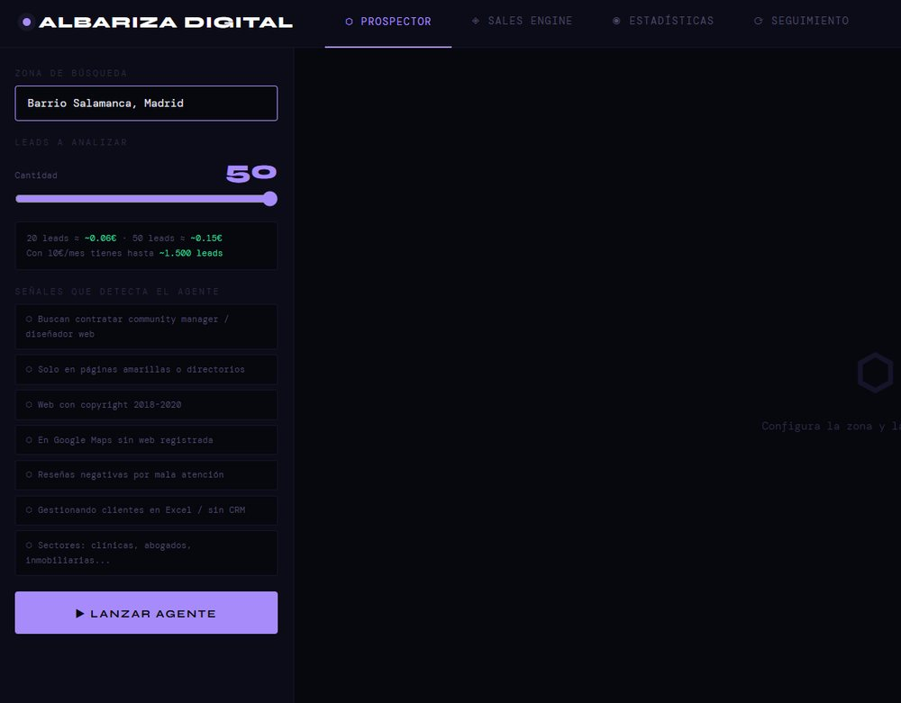
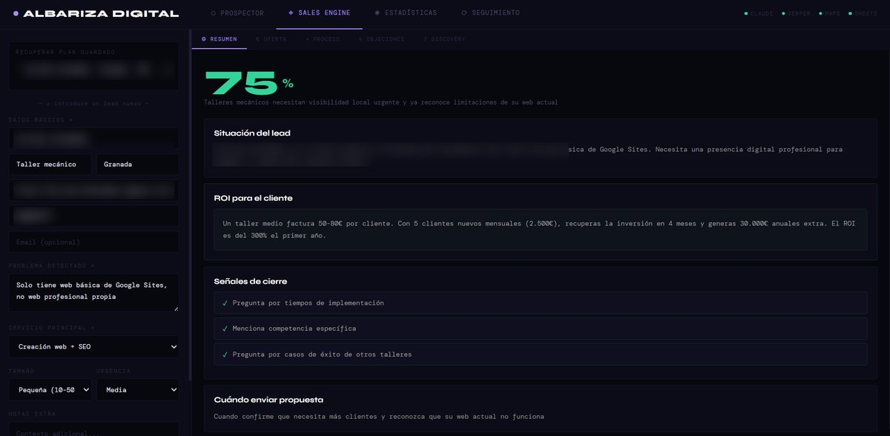
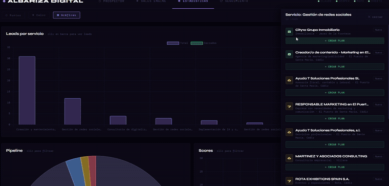

Sistema comercial · Albariza DigitalSales system · Albariza Digital
Encontrarlos, entenderlos y cerrarlosFind them, understand them, close them
Un motor de prospección B2B que busca negocios locales con problemas digitales visibles, verifica esos problemas en vivo antes de puntuarlos, y genera el plan de venta completo para cerrarlos.A B2B prospecting engine that finds local businesses with visible digital problems, verifies those problems live before scoring them, and generates the complete sales plan to close them.
El cuello de botellaThe bottleneck
En una operación comercial pequeña, prospectar a mano se lo come todo: buscar negocios, mirar si tienen web, comprobar si la tienen abandonada, ver sus reseñas, decidir si merecen una llamada. Horas de trabajo para descartar a la mayoría.In a small commercial operation, prospecting by hand eats everything: searching for businesses, checking whether they have a website, whether it is abandoned, reading their reviews, deciding whether they deserve a call. Hours of work to discard most of them.
La diferencia no está en encontrar más negocios: está en verificar en vivo, en el momento de puntuar, que el problema que detectaste sigue existiendo. Los resultados de búsqueda mienten — están caducados.The difference isn't finding more businesses: it's verifying live, at the moment of scoring, that the problem you detected still exists. Search results lie — they're stale.
33 señales en 7 categorías33 signals across 7 categories
El sistema no busca «negocios»: busca síntomas concretos de que a una empresa le hace falta ayuda digital, antes de que ningún humano la mire.The system doesn't look for businesses: it looks for concrete symptoms that a company needs digital help, before any human looks at it.
Job Board
Empresas contratando community manager, diseñador web o personal de marketing, sin estrategia digital detrásCompanies hiring community managers, web designers or marketing staff, with no digital strategy behind it
Directorios
Negocios listados solo en páginas amarillas, sin web propiaBusinesses listed only in directories, with no website of their own
Redes sociales
Hostelería sin Instagram, o con perfiles abandonadosHospitality with no Instagram, or with dormant profiles
Web desactualizada
Copyright antiguo, landings genéricas de «bienvenida», contenido caducadoOld copyright dates, generic welcome landings, stale content
CRM/ERP
Clientes gestionados en Excel, personal administrativo contratado para tareas manualesClients tracked in Excel, admin staff hired for manual work
IA y automatización
Saturados de consultas de clientes y procesos manuales repetitivosOverwhelmed with customer queries and repetitive manual processes
Google Ads / SEO
Negocios contratando especialistas de medios de pago por fueraBusinesses hiring paid-media specialists externally

Verificación en vivo antes de puntuarLive verification before scoring
Es la pieza de la que estoy más satisfecho, porque es lo que separa una lista de una lista útil. Dos motores alimentan la búsqueda —Serper contra Google en tiempo real, con 33 consultas dirigidas por zona, y la API de Places sobre 15 categorías de negocio— pero el resultado de una búsqueda es una foto vieja. Antes de asignar puntuación, cada candidato se vuelve a comprobar:This is the piece I'm happiest with, because it's what separates a list from a useful list. Two engines feed the search — Serper against live Google with 33 targeted queries per zone, and the Places API across 15 business categories — but a search result is an old photograph. Before scoring, every candidate is re-checked:
- Señal «sin web» → la IA comprueba si hoy tienen una de verdad.Signal 'no website' → the AI checks whether they actually have one today.
- Señal «web desactualizada» → la IA visita la URL y busca contenido reciente (2024-2026).Signal 'outdated web' → the AI visits the URL and looks for recent content (2024–2026).
- Señal «sin reseñas» → la IA consulta sus reseñas actuales reales en Google Maps.Signal 'no reviews' → the AI looks up their actual current Google Maps reviews.
Puntuación y anti-ruidoScoring and anti-noise
Cada lead sale con una puntuación del 1 al 10 y el motivo de esa puntuación. Solo llega a un humano lo que merece su tiempo:Every lead comes out with a 1–10 score and the reason behind it. Only what deserves human time reaches a human:
Y tres filtros de ruido antes de eso: una lista negra de más de 40 dominios excluidos (directorios, medios, clubes deportivos, cadenas nacionales), coincidencia de patrones en títulos para descartar artículos, rankings, páginas de administración pública y PDFs, y una comprobación final por IA que rechaza cualquier cosa que no sea un negocio local real.And three noise filters before that: a blacklist of 40+ excluded domains (directories, news sites, sports clubs, national chains), title pattern matching to discard articles, rankings, government pages and PDFs, and a final AI check that rejects anything that isn't a real local business.
Del lead al plan de ventaFrom lead to sales plan
Cada lead cualificado genera automáticamente un plan comercial completo en cinco pasos —primer contacto, seguimiento, prueba de valor, gestión de objeciones y cierre—: propuesta de valor ajustada al problema detectado, secuencia de mensajes escrita para cada paso, guiones de objeción de precio, tiempo y confianza, preguntas de descubrimiento por sector, y el paquete de servicio recomendado con su justificación. Todo se guarda y se recupera cuando haga falta.Every qualified lead automatically generates a complete five-step sales plan — first contact, follow-up, value proof, objection handling and close: a value proposition tailored to the detected problem, the exact messages for each step, objection scripts for price, timing and trust, sector-specific discovery questions, and the recommended service package with its rationale. All saved and recoverable.

Pipeline, seguimiento y estadísticasPipeline, follow-up and statistics
Un CRM propio con seis etapas mantiene cada lead en movimiento, y una cola de «tocar hoy» ordena por urgencia según los días transcurridos desde el último contacto en cada etapa — nada se queda parado por olvido. Desde ahí se envía por WhatsApp o Gmail y se marca el resultado. El panel de estadísticas añade mapa de leads en vivo por estado, mapa de calor por zona, reparto por servicio detectado y distribución de puntuaciones, todo clicable: pulsas un segmento y se filtra el panel de leads.A built-in CRM with six stages keeps every lead moving, and a touch-today queue sorts by urgency using days since last contact at each stage — nothing stalls through forgetfulness. From there you send by WhatsApp or Gmail and mark the outcome. The statistics panel adds a live lead map by status, a heat map by zone, a breakdown by detected service and a score distribution — all clickable: click a segment and the lead panel filters.

Lo que cuestaWhat it costs
No hay suscripción ni precio por usuario: corre sobre coste bruto de API. Una ejecución de 50 leads cuesta un euro y medio, y el CRM, las estadísticas y el seguimiento no cuestan nada porque no llaman a ninguna API. Las herramientas comerciales equivalentes se mueven en cifras de tres dígitos al mes.There is no subscription and no per-seat price: it runs on raw API cost. A 50-lead run costs a euro and a half, and the CRM, statistics and follow-up cost nothing because they call no API. Comparable commercial tools sit in the low hundreds per month.